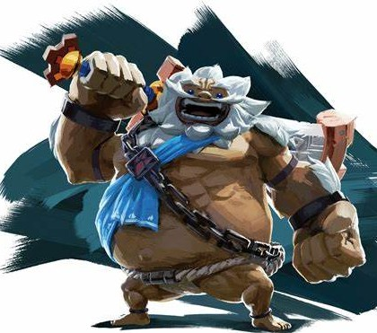
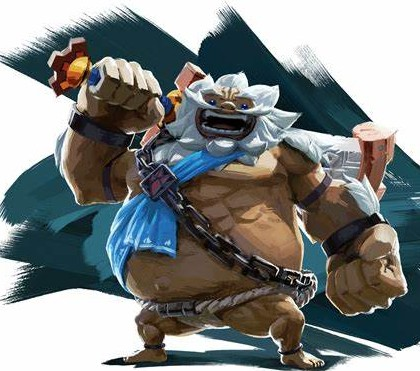

Le peuple Goron
Les Gorons sont une race de créatures robustes et musclées, vivant principalement dans la région volcanique du Goron City, dans la montagne de la Mort. Leur peau est de couleur gris-argentée, et ils sont connus pour leur grande force physique, ainsi que leur capacité à résister à des températures extrêmes. Les Gorons ont une alimentation principalement composée de pierres, qu'ils digèrent grâce à un système unique. Ce peuple est également célèbre pour sa culture basée sur les mines et les ressources naturelles. Leur chef, Bladon, est un personnage important dans l'histoire, car il joue un rôle majeur dans la lutte contre la calamité de Ganon en récupérant une créature divine dans la région volcanique.
Caractéristiques des Gorons :
- Peau de pierre
- Force physique impressionnante
- Capacité à résister à la chaleur
- Amour pour la nourriture et les rochers
Personnages Gorons :
 


Donjon : Vah Rudania
Le donjon de Vah Rudania est situé dans la région de la Montagne de la Mort. Voici comment le battre :
Étapes pour battre Vah Rudania :
- Utilisez les capacités de Daruk pour naviguer à travers le donjon.
- Activez les terminaux en utilisant les capacités de protection de Daruk.
- Évitez les attaques de feu et les pièges en utilisant votre bouclier et vos compétences de combat.
Boss : Feu de Ganon
Le boss du donjon Vah Rudania est le Feu de Ganon. Voici comment le battre :
- Utilisez les capacités de protection de Daruk pour atteindre le boss.
- Évitez ses attaques de feu en utilisant votre bouclier.
- Attaquez-le avec des flèches et des attaques de mêlée.